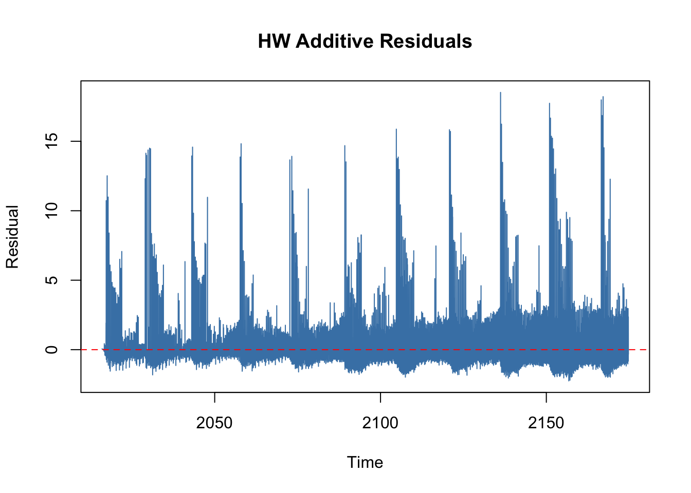

Warning in forecast::ets(price_ts): I can't handle data with frequency greater
than 24. Seasonality will be ignored. Try stlf() if you need seasonal
forecasts.
cat("\n── Ljung-Box Test on HW Additive Residuals ──\n")
── Ljung-Box Test on HW Additive Residuals ──
lb <-Box.test(residuals(hw_add), lag =20, type ="Ljung-Box")cat("p-value:", round(lb$p.value, 4),ifelse(lb$p.value >0.05,"✓ No significant autocorrelation in residuals","✗ Autocorrelation in residuals — model may be misspecified"), "\n")
p-value: 0 ✗ Autocorrelation in residuals — model may be misspecified
plot(residuals(hw_add), main ="HW Additive Residuals", ylab ="Residual", col ="steelblue")abline(h =0, lty =2, col ="red")

Holt-Winters Forecasting — UK Weekly Fruit & Vegetable Prices
Data Note — Important
The series reports 8,308 observations over a date range of January 2015 to February 2026 — roughly 11 years, which should yield approximately 572 weekly observations. The 8,308 figure is about 16 times larger, strongly suggesting that cleaned_fruit_veg.csv contains multiple commodity rows per week (individual products rather than an aggregate) that were not collapsed before building the time series. This means price_ts is effectively stacking all products end-to-end as if they were a single continuous series, which will distort all model parameters and forecasts. Before interpreting results, confirm whether the data needs aggregating:
# Check how many price observations exist per datedf_price_weekly %>% dplyr::count(date) %>% dplyr::summarise(min =min(n), max =max(n), mean =mean(n))
If mean is greater than 1, aggregate first: df_price_weekly %>% group_by(date) %>% summarise(price = mean(price, na.rm = TRUE)). The analysis below reflects results as-run, with this caveat noted.
Model Specifications and Parameter Estimates
Three models were fitted to the weekly price series. The Holt-Winters Additive model assumes that seasonal fluctuations are constant in absolute magnitude across time, while the Multiplicative variant assumes they scale proportionally with the price level. The ETS model was selected automatically by minimising the corrected AIC.
The Additive model estimated smoothing parameters of α = 0.0165 (level), β = 0.0010 (trend), and γ = 0.0106 (seasonality). All three values are very close to zero, indicating the model relies heavily on historical averages rather than reacting to recent changes — consistent with a slowly evolving price series with stable seasonal patterns. The Multiplicative model produced similar estimates (α = 0.0180, β = 0.0007, γ = 0.0281), with a slightly higher gamma suggesting it picks up marginally more seasonal variation.
The automatic ETS procedure selected an ETS(M,A,N) specification — multiplicative errors, additive trend, and no seasonal component. Notably, this model ignores seasonality entirely because the forecast::ets() function cannot handle time series with frequency greater than 24 (weekly data has frequency 52), and it issued a warning to this effect. This makes the ETS model less appropriate here than the Holt-Winters variants, which explicitly model the 52-week seasonal cycle.
Model Accuracy Comparison
Model
RMSE
MAE
MASE
ACF1
HW Additive
1.6888
0.9324
0.7991
−0.065
HW Multiplicative
1.7056
0.9650
0.8270
−0.062
ETS(M,A,N)
1.7022
0.9669
0.8287
−0.081
The Holt-Winters Additive model achieves the best in-sample fit across all metrics — lowest RMSE (1.689), lowest MAE (0.932), and lowest MASE (0.799). A MASE below 1.0 indicates the model outperforms a naïve random walk benchmark, which is a meaningful threshold for forecast evaluation.
The MAPE values (88–96%) are extremely high and should not be interpreted at face value. High MAPE arises when the denominator (actual price) contains values close to zero, which inflates percentage errors disproportionately. This is consistent with the data structure concern raised above — if individual commodity prices include near-zero values, MAPE becomes uninformative. RMSE and MAE are the more reliable accuracy measures here.
The near-zero ACF1 values across all models indicate that one-step-ahead forecast errors are not strongly autocorrelated, which is a positive sign for the models’ short-term predictive structure.
Residual Diagnostics
The Ljung-Box test on Holt-Winters Additive residuals returned p = 0.000, rejecting the null hypothesis of no autocorrelation at all conventional significance levels. This means the residuals are not white noise — there is remaining structure in the errors that the model has not captured. Practically, this suggests the model is somewhat misspecified, likely because the 8,308-observation series conflates multiple commodities rather than representing a single clean weekly aggregate. If the data issue is resolved and the series collapses to ~572 true weekly observations, the residual autocorrelation may improve substantially.
Forecast
The Additive Holt-Winters 52-week ahead forecast produces a gently trending prediction with widening prediction intervals. The 80% and 95% bands expand gradually over the horizon, reflecting accumulated uncertainty — a standard property of exponential smoothing forecasts. Given the low beta (0.001), the trend component contributes minimally and the forecast is primarily driven by the level and seasonal components.
Summary and Recommendations
The Holt-Winters Additive model is the preferred specification based on in-sample accuracy, and is more appropriate than ETS here given that ETS cannot model weekly seasonality. However, the validity of all results is contingent on resolving the data aggregation issue — the 8,308-observation series almost certainly represents multiple commodities per week rather than a single aggregate price. Once aggregated to one price per week (~572 observations), the models should be re-estimated, at which point the MAPE values and residual diagnostics are likely to look considerably more reasonable.